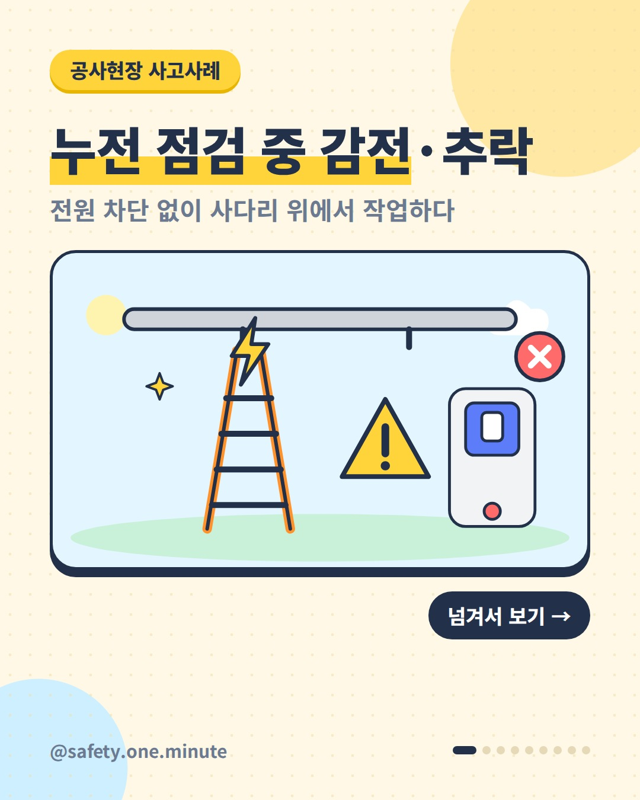
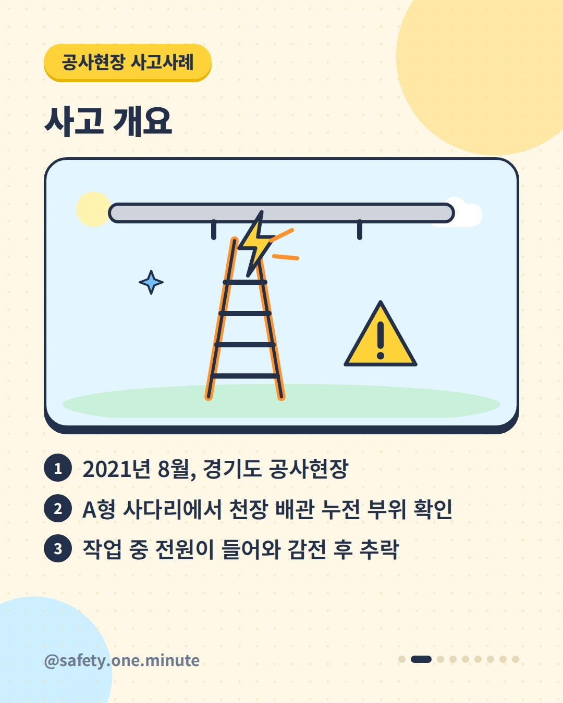
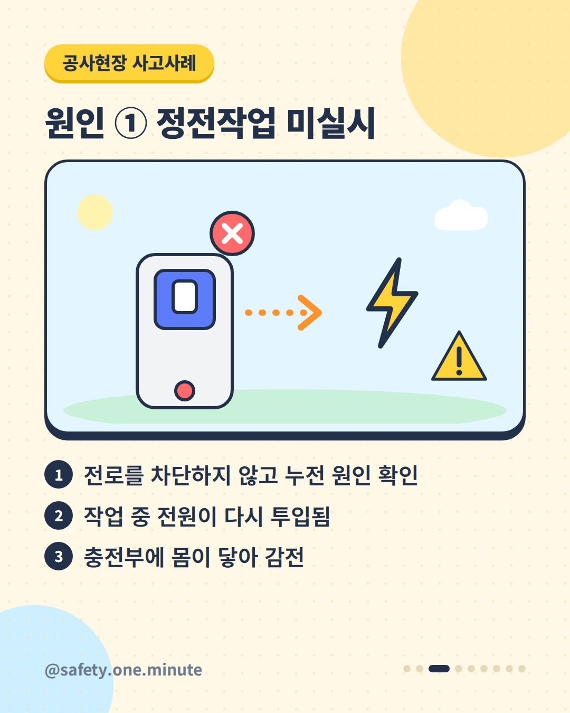
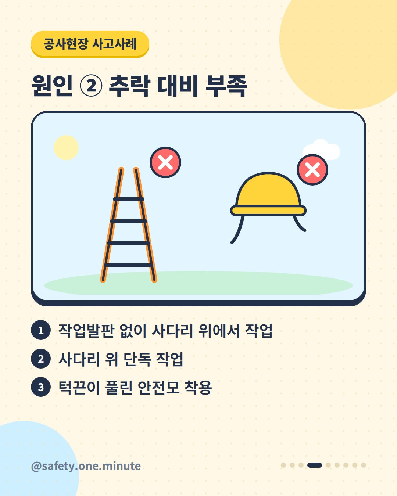
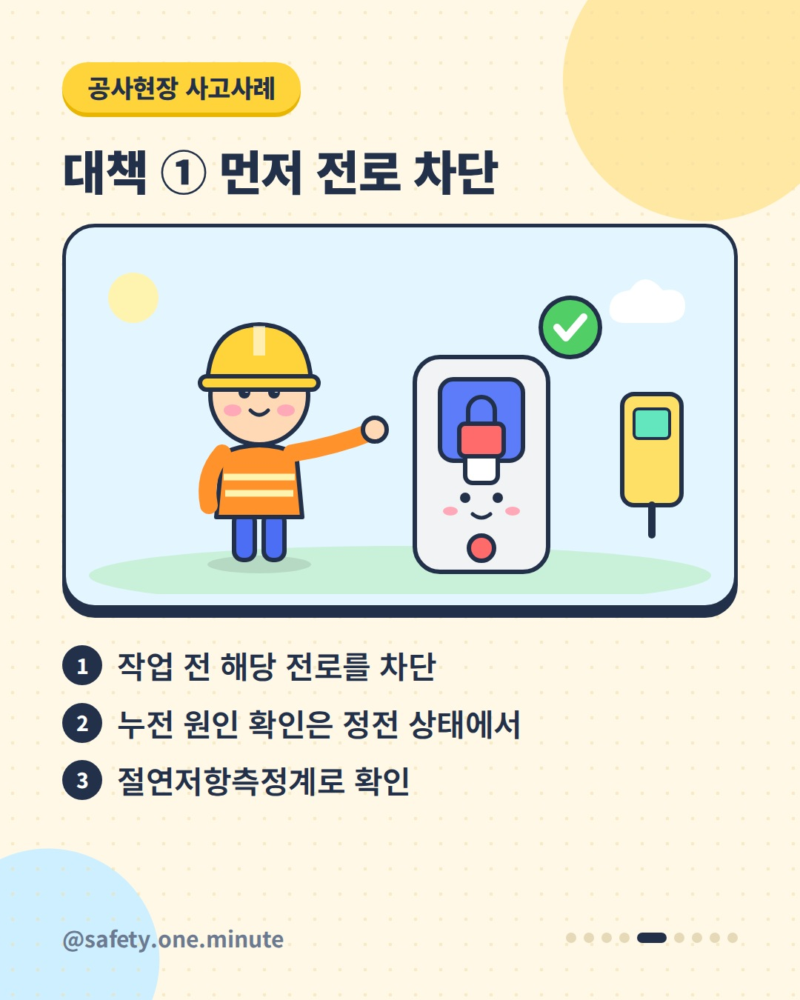
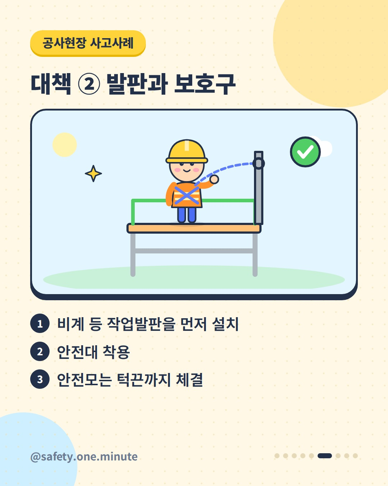
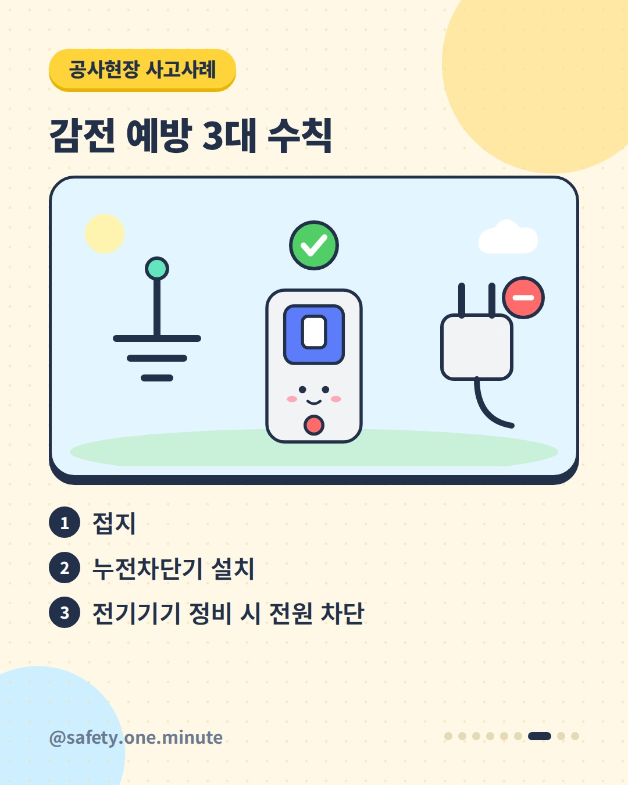
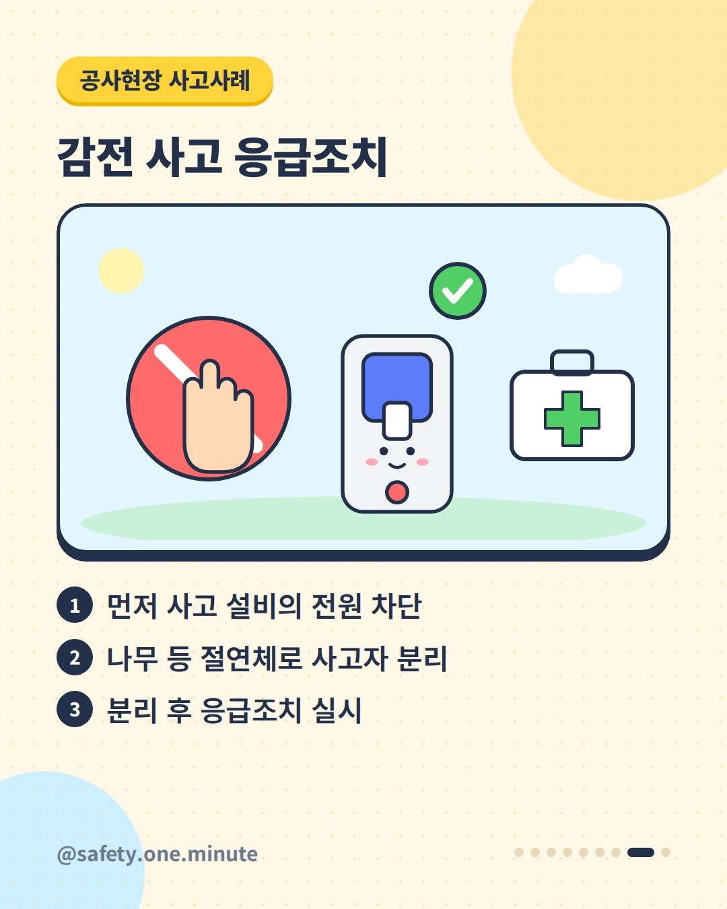
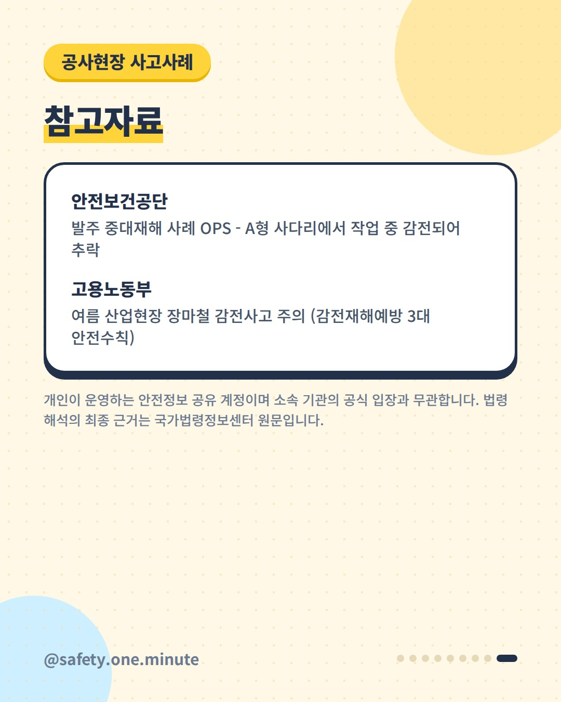

누전 점검 중 감전·추락 — 9장 (4:5)









캡션
누전을 확인하던 사다리 위에서, 전원이 다시 들어왔습니다. 2021년 8월 경기도의 한 공사현장에서 A형 사다리에 올라 천장 소방배관의 누전 부위를 확인하던 근로자가, 작업 중 전원이 투입되면서 감전된 뒤 추락해 숨지는 사고가 있었습니다. 삼가 고인의 명복을 빕니다. 안전보건공단 사례 자료는 원인으로 정전작업 미실시, 작업발판 없이 사다리 위에서 단독 작업, 턱끈이 풀린 안전모 착용을 꼽았습니다. 예방대책은 작업 전 해당 전로 차단, 누전 원인 확인은 정전 상태에서 절연저항측정계로, 비계 등 작업발판 설치, 안전대·안전모 등 보호구 착용입니다. 감전 예방의 기본은 '접지, 누전차단기 설치, 정비 시 전원 차단' 세 가지입니다. 감전 사고가 나면 먼저 전원을 차단하고, 나무와 같은 절연체로 사고자를 분리한 뒤 응급조치를 실시하세요. 출처: - 안전보건공단 – 발주 중대재해 사례 OPS 「A형 사다리에서 작업 중 감전되어 추락」 - 고용노동부 – 「여름 산업현장 장마철 감전사고 주의」(안전보건공단 감전재해예방 3대 안전수칙) 개인이 운영하는 안전정보 공유 계정이며 소속 기관의 공식 입장과 무관합니다. 법령 해석의 최종 근거는 국가법령정보센터 원문입니다. #감전사고 #추락사고 #사고사례 #정전작업 #전원차단 #누전 #사다리작업 #작업발판 #안전대 #안전모 #전기안전 #산업안전 #중대재해예방 #현장안전